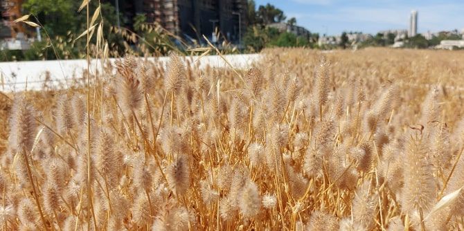
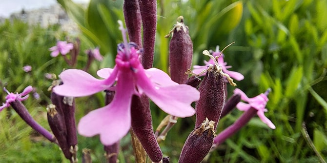
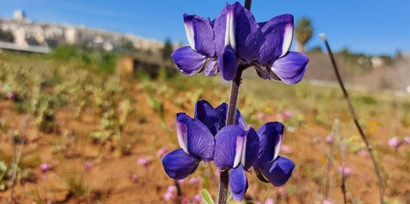

(Photo: Shlomi Amsalem)
(Photo: Shlomi Amsalem)
The Mandel Foundation’s new building in Jerusalem is an elegant two-story structure that blends in with its surroundings, thanks in part to a “living roof” that contributes to urban bio diversity and serves as a home to thousands of flowers and a variety of wildlife. Planned by landscape architect Leor Lovinger and the building's architects in consultation with Amir Balaban, head of the department of urban nature of the Society for the Protection of Nature in Israel (SPNI), the Mandel Foundation’s living roof enables the building to preserve the continuity of the green and wooded land of the valley in which it is located, continuing the urban ecological corridor in which the Jerusalem Botanical Gardens and the Gazelle Park are located.
Unlike many living roofs, the Mandel Foundation’s roof does not have an automatic watering system; rather, it is designed to mimic nature, growing in accordance with the seasons of the year and the natural cycle of rainfall. It is thus considered a “brown roof” rather than a “green roof,” since it is only green for part of the year. Spanning two and a half dunam (about half an acre), the Mandel roof is Israel’s largest living roof and the largest living roof of its type in the Middle East. In the winter, after the soil absorbs rain water, the roof bursts into bloom and is covered in beautiful Mediterranean plant life, which continues to bloom throughout the spring. During the summer, when there is no rain and no irrigation, the plants wither and the roof is covered in gold and brown, like the natural areas surrounding it.

The Mandel living roof in the summer (Photo: Amir Balaban)
During the building’s construction, the roof was specially sealed to ensure that no water would leak into the building. Next, special mats were laid out, and a layer of 10-20 cm of terra rossa (red clay soil) was placed over them. Planting of more than 60 types of plants followed, including over 2,000 squill bulbs (known as “chatzav” in Hebrew), 700 anemones, 500 buttercups, 600 bulbs of garlic, 200 cyclamen bulbs, and more. An additional 40 types of plants, such as the wheat that can be seen on roof in the summer, grew from seeds that were in the soil itself. Bird droppings were responsible for tens of additional plants.
 Sea squills grow on the Mandel living roof (Photo: Amir Balaban)
Sea squills grow on the Mandel living roof (Photo: Amir Balaban)
The roof is home not only to thousands of flowers but to a variety of wildlife. It is populated by thousands of invertebrates and hosts pollinating insects, bees, and butterflies. Many species of birds are attracted to the roof and its abundance of food, and move around it freely without any human interference. Even in the summer, when Israel is completely dry, the building’s roof is thriving with life.
 (Photo: Amir Balaban)
(Photo: Amir Balaban)
It should be noted that the living roof was relatively inexpensive to set up, has minimal infrastructure, has no maintenance costs, and serves as a layer of insulation that conserves energy and decreases cooling costs in the summer. The roof also helps absorb runoff water. The high silt content in its soil enables it to absorb up to 140 cubic feet of water, demonstrating the potential of living roofs to be part of a city’s water management system and to help prevent flooding in urban areas. Rather than running off into the streets, the water is used by plants, which also absorb carbon dioxide and produce oxygen.

(Photo: Amir Balaban)
The Society for the Protection of Nature in Israel monitors what takes place on the Mandel living roof and uses it as an example to encourage the construction of living roofs on municipal and public buildings in Israel. The Mandel Foundation is proud to be a pioneer of this kind of environmental protection in Israel, to have its headquarters in Jerusalem serve as a model of how buildings can compensate for the loss of nature in urban environments, and to be part of national and international efforts to contribute to biodiversity conservation.

(Photo: Amir Balaban)
{kind=link}
{kind=link}
{kind=link}